JIATONG ZHANG | MECHANICAL ENGINEERING | TEST SYSTEMS | ROBOTICS
Mechanical engineer building motor test systems, robotic hardware, and electromechanical platforms.
I design and validate mechanical and electromechanical systems for motor testing, robotic platforms, and data-driven test automation. My work spans fixture design, sensor integration, DAQ workflows, Python-based GUIs, motion control, and hands-on prototype validation.
Electromechanical test systems and mechanical design
Professional work centered on motor validation, fixture design, instrumentation, DAQ workflows, Python-based test automation tools, prototype validation, and mechanical systems for robotic platforms.
Current role
Mechanical Engineer
JL MAG USA Inc. | Southern California
2023 - Present
Designed and built electromechanical test platforms for motor validation, including fixture design, sensor integration, motor drive integration, and DAQ workflows.
Developed Python-based GUI tools for automated test execution, real-time data acquisition, post-processing, FFT analysis, and report generation.
Integrated torque sensors, motor drives, DAQ hardware, and custom mechanical assemblies to support repeatable engineering validation.
Supported GD&T, machining, inspection, and fixture iteration for production and R&D test systems.
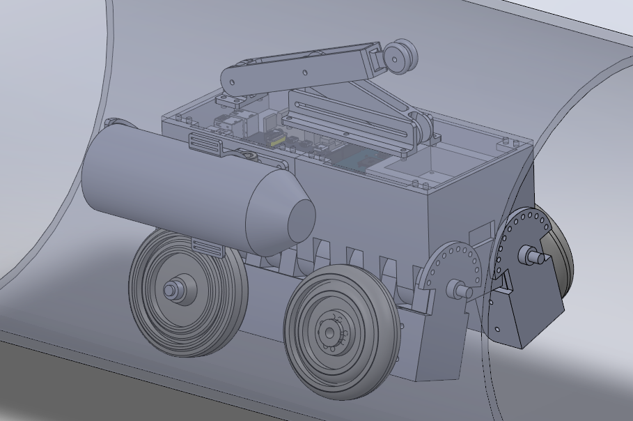
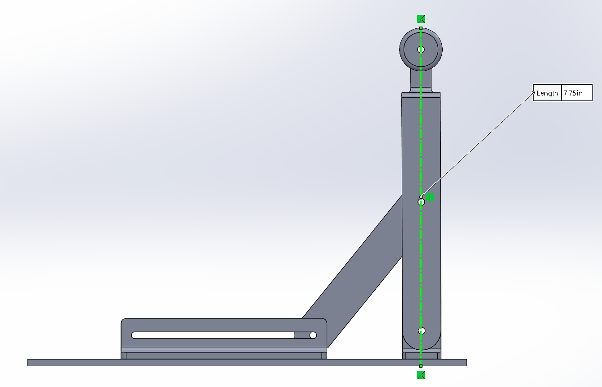
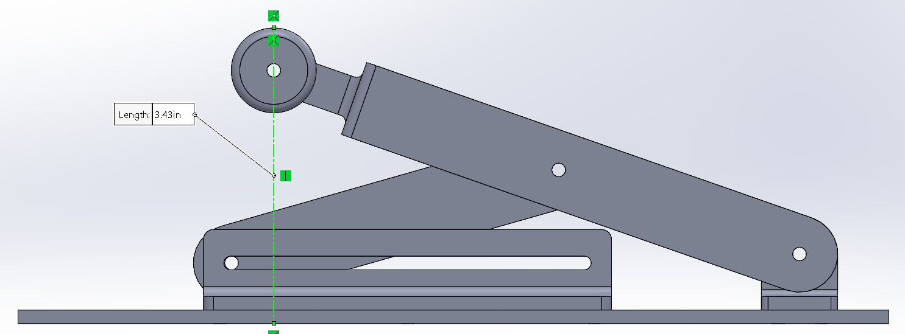
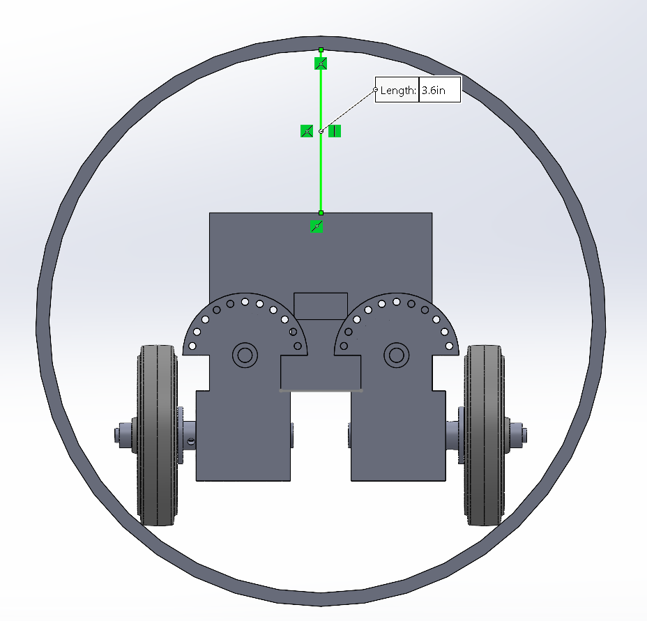
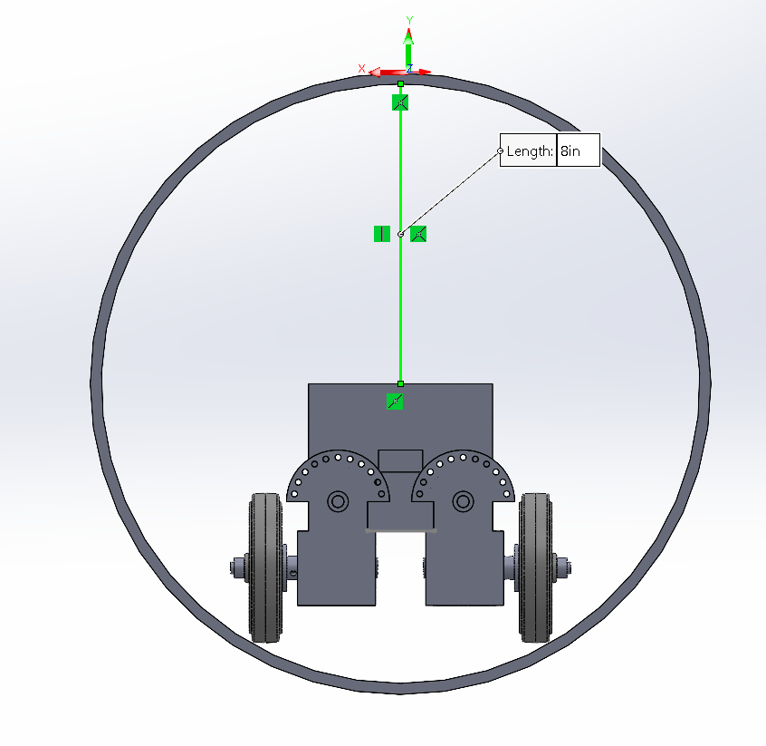
Mechanical Design Engineer Intern
VIM Networks - New York, NY
June 2022 - August 2022
Led a team of 6 in the successful optimization of a pipe inspection robot, spearheading the benchmarking process and subsequent design changes using Solidworks, enhancing adaptability to both 12-inch and 16-inch pipes.
Designed an innovative fiber planting mechanism utilizing a 3-bar linkages structure and SOLIDWORKS, significantly improving planting efficiency.
Collaborated with the team in the finalization of the fiber planting robot design, fostering a collective approach to problem-solving.
Employed 3D printing technologies in the construction of the robot, demonstrating practical application of advanced manufacturing techniques in robotics.
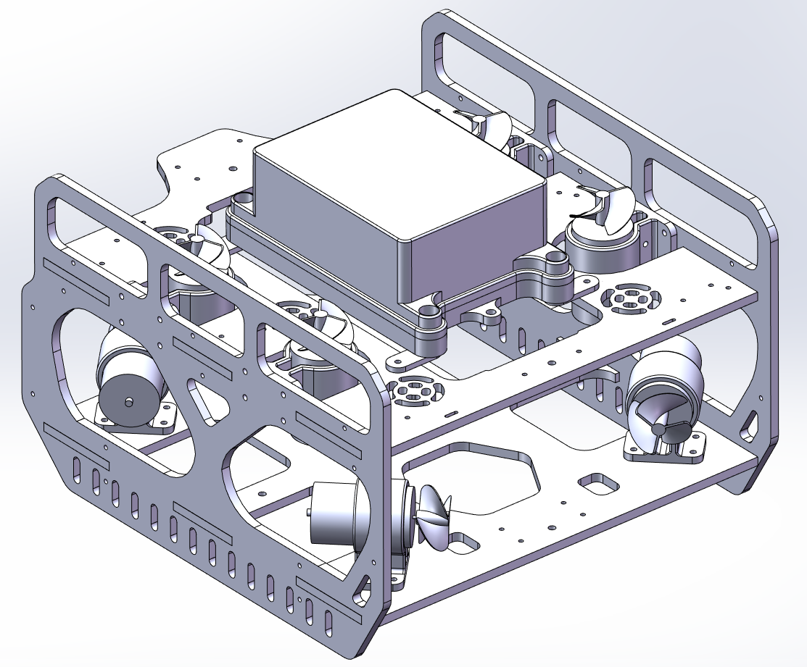
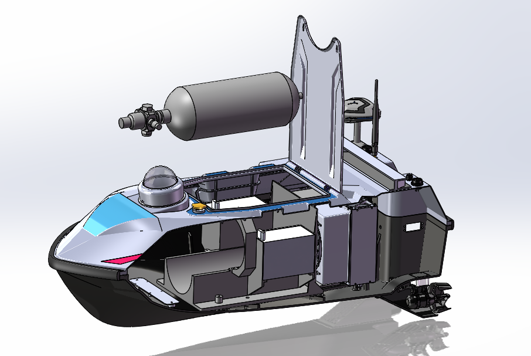
Structural Engineer Intern
Xi'an Underwater Dynamics Technology Co., Ltd. - Shaanxi, China
June 2020 - August 2020
Constructed models and scrutinized the mechanical properties of the ROV (Remotely Operated Vehicle) utilizing SOLIDWORKS, enhancing understanding of material density and its impact on center of gravity and buoyancy.
Designed and implemented experiments to decipher the relationship between motor speed and thrust, leading to the creation of a practical thrust test platform.
Leveraged force measurement and main rod moment length to accurately gauge the thrust, promoting a more nuanced understanding of motor performance.
Cultivated robust collaboration skills over a three-month internship period, working effectively with diverse teams and contributing to successful project outcomes.
Capabilities
Skills
Engineering strengths used across electromechanical test platforms, instrumentation, prototype validation, and manufacturing support.
Test Systems & Motor Validation
Electromechanical test platforms
Motor testing
Torque measurement
DAQ systems
Prototype validation
Repeatable test workflows
Motor drive integration
Fixture Design & Mechanical Engineering
Fixture design
GD&T
Custom mechanical assemblies
Tolerance analysis
DFM/DFA
SolidWorks
Fusion 360
FEA
Instrumentation & Data Acquisition
Sensor integration
Torque sensors
DAQ systems
Signal conditioning
Real-time data acquisition
Test instrumentation
Post-processing
Programming & Analysis
Python
Python GUI development
PyQt
Automated test execution
FFT analysis
Data logging
Report generation
MATLAB
Motion Control & Robotics
Motion control
Control systems
Motor drives
Mechatronics
Robot dynamics
Mobile robotics
Webots
OpenSim
Manufacturing & Inspection Support
CNC machining
Wire EDM
CMM inspection
Contour measurement
Grinding
Metal 3D printing
CAM training
Manufacturing support
Languages
English - Fluent
Chinese - Native
Japanese - Conversational
Selected work
Project portfolio
Engineering projects across machine learning, mechanical design, soft robotics, controls, and mobile robots.
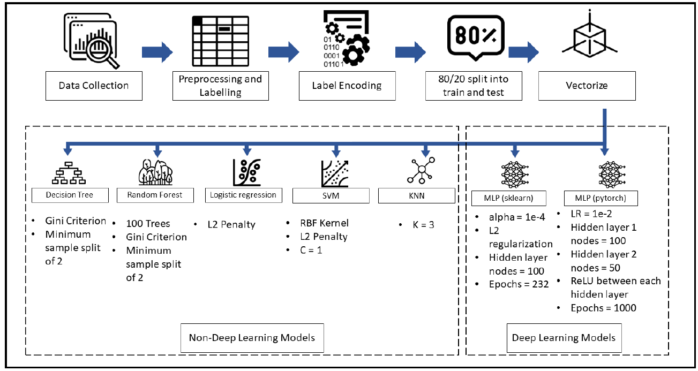
CMU | Spring 2023 | ML + GUI
Automated Distribution Center Troubleshooter
Built a classifier workflow and GUI to help diagnose electrical issues in automation systems.
Python
Random Forest
GUI
Classification
Outcome: 79% test accuracy for electrical issue classification.
With the goal of improving troubleshooting efficiency in distribution center automation systems, our project focuses on incorporating machine learning algorithms into the troubleshooting process. The aim is to quickly classify the type of problem (hardware, sensor, or wiring/power) within the category of electrical issues. This allows engineers to address the problem using the most effective method.
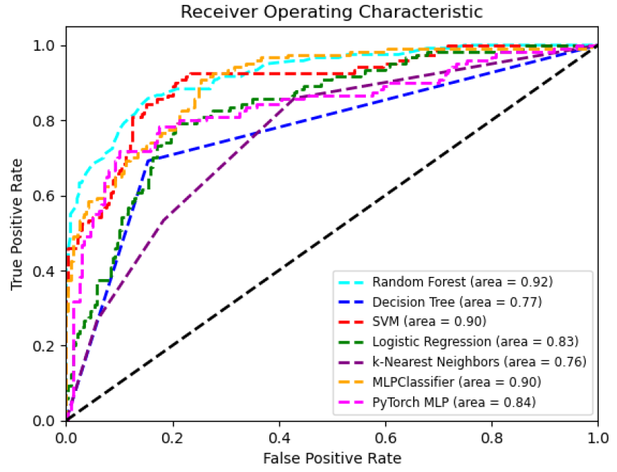
ROC curve of tested machine learning models
To gather representative data, our team member gained access to the database of an industry-leading company. We tested both deep learning and non-deep learning approaches. The selected models for testing included Support Vector Machine (SVM), Random Forest, Decision Tree, Logistic Regression, K-Nearest Neighbors (KNN), and Multilayer Perceptron (MLP).
Among these models, the Random Forest model demonstrated the highest accuracy for problem classification, achieving a training accuracy of 99.58% and a test accuracy of 79%. Notably, the model performed exceptionally well in classifying Electrical Hardware issues, with a precision of 79% and a recall of 85%.
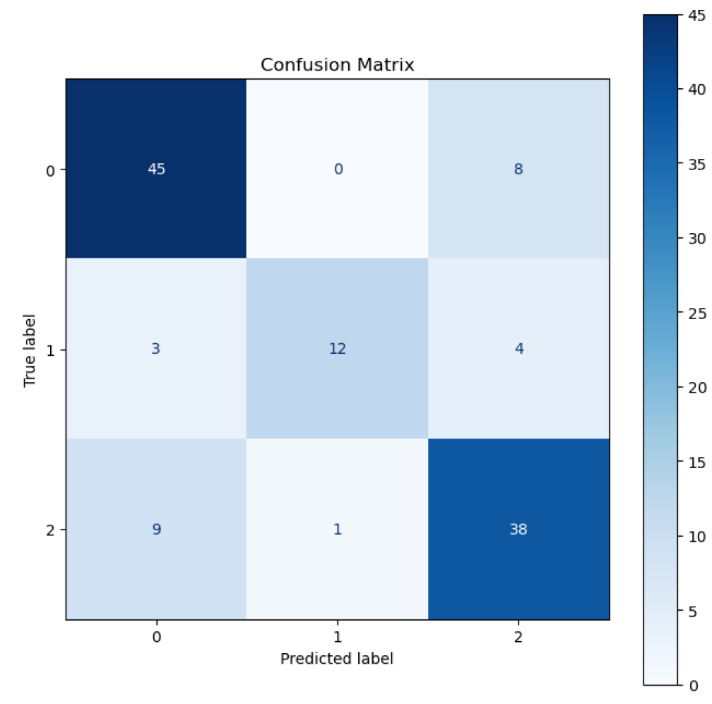
Confusion matrix for Random Forest model
I designed and implemented a graphical user interface (GUI) to improve accessibility and convenience of testing and practical usage. It will provide a prediction based on the suspected features that the user types in. The prediction is based on the Random Forest model.
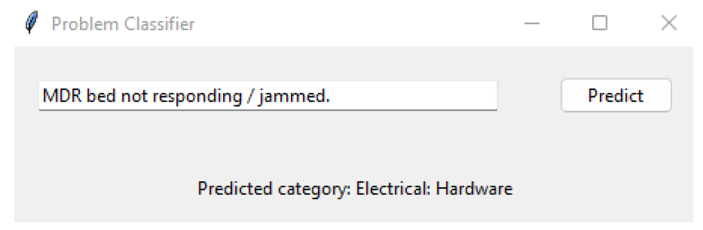
GUI of the problem classifier
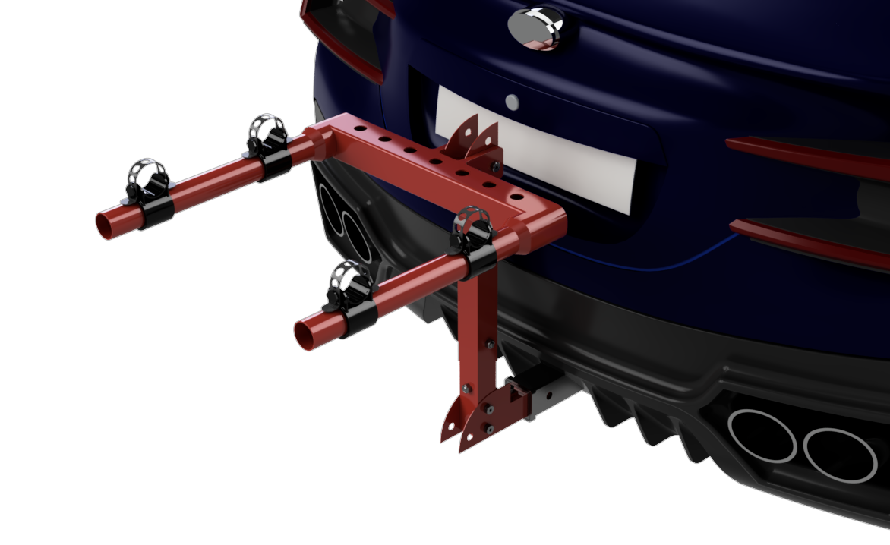
CMU | Spring 2023 | DFM + FEA
Bike Rack Design
Designed a manufacturable two-bike rack with improved storage, assembly, and structural performance.
Fusion 360
FEA
DFM/DFA
CAD
Outcome: Reduced rack mass from 13.28 kg to 10.22 kg.
The project aimed to design a bike rack for a concept car of an automotive company. The design needed to accommodate two bikes, allow easy attachment/detachment, save storage space, and cater to various bike sizes and frame styles. Importantly, the design had to demonstrate Design for Manufacturing (DFM) and Design for Assembly (DFA) techniques.
We began with ideation and conceptual sketches, creating a versatile design that incorporated a rotatable U-part and bottom structure, allowing for easy storage and trunk access. A key feature was the height adjuster, enabling adaptability to different bike sizes and car models. The rack was designed with several components including the structure U part, rack stand, height adjuster, and receiver tube connector, all made of steel for stability. Additionally, the bike holder with elastic rubber straps was made from plastic and rubber to secure the bikes safely.
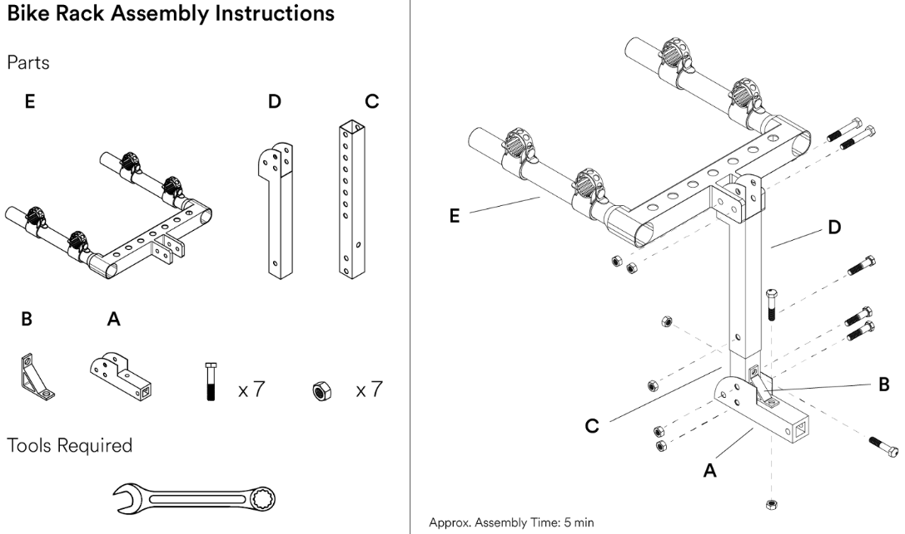
Bike Rack Assemble Instrcution
We utilized Fusion 360 for static stress analysis. Our research determined that the average force exerted by a standard mountain bike was around 32 lbf, which was applied directly on the bike holder in our model. Initial results indicated that the design needed to be improved to provide a higher safety factor when holding two bikes.
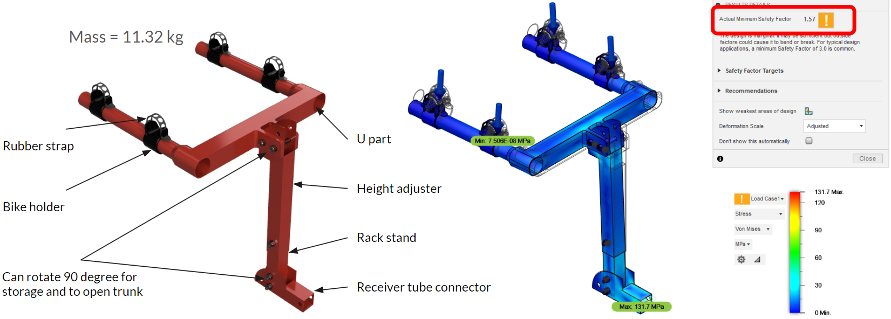
Old Design with FEA
After identifying the areas of improvement, we made significant modifications to the design. This involved integrating Aluminum 6061 instead of steel for non-structural components. This choice not only strengthened our design but also reduced the mass from 13.28 kg to 10.22 kg, creating a more efficient bike rack.
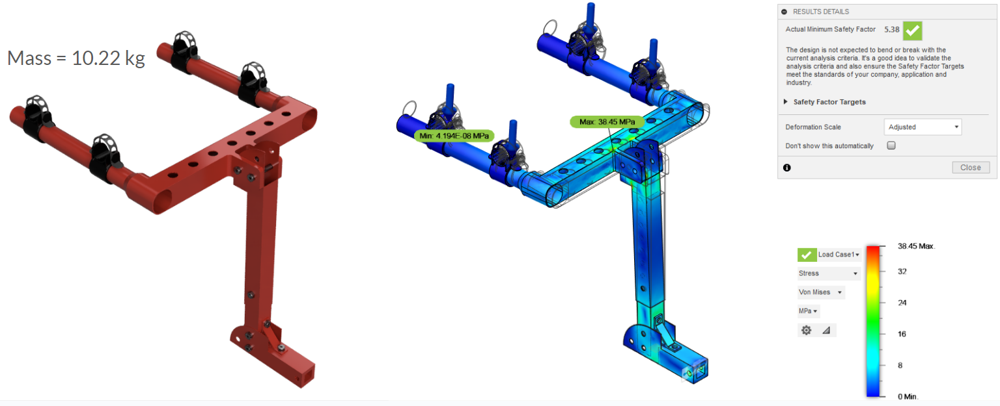
New Design with FEA
The project resulted in a functional, easy-to-use, and adaptable bike rack design that satisfies customer needs. The rack was safe, secure, and efficient, featuring a design ready for manufacturing and assembly.
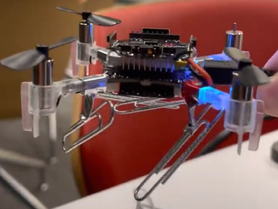
CMU | Fall 2022 | Controls
Recursive Quadcopter Mass Estimator
Integrated recursive least squares mass estimation into a CrazyFlie control workflow.
RLS
PID
CrazyFlie
Data logging
Focus: Payload mass estimation for improved trajectory tracking.
This project focuses on the development of a mass estimator for drone payloads and its integration into the controller of a CrazyFlie quadcopter. The objective is to address the challenges posed by variable system dynamics resulting from changes in payload weight and mid-flight delivery mechanisms.
Our team successfully designed and implemented a mass estimator using the recursive least squares (RLS) algorithm. The estimator demonstrated accurate detection of paperclip weights with an error rate of less than 15% in offline tests. By incorporating the estimated mass into a PID controller, the project achieved improved trajectory tracking compared to a static PID controller.
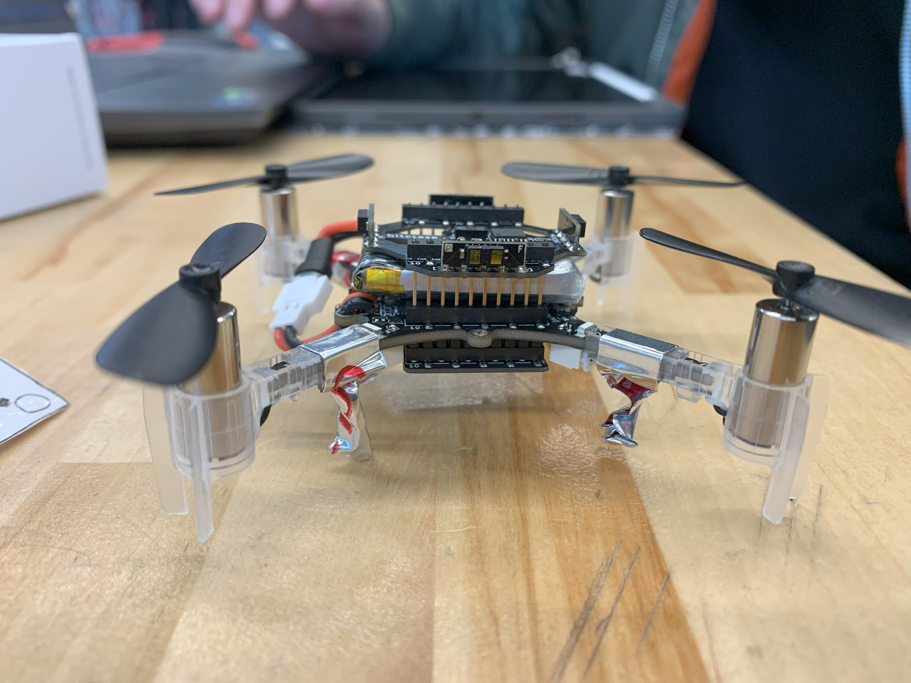
We added aluminum tape standoffs to the bottome of the CrazyFlie to enable us to pick up paperclips without interfering with the FlowDeck
In this project, I actively contributed to various tasks, including flying the quadcopter with a joystick, implementing code flashing, finding a suitable mounting mechanism for the magnet, executing autonomous trajectories, collaborating on data logging, reconfiguring the paperclip mounting structure, and setting up autonomous trajectories with data logging for analysis. I worked closely with the team to refine the controller and estimator designs based on the collected data.
The successful outcomes of this project emphasize the significance of the mass estimator in addressing dynamic changes in drone systems during flight. The methodologies and findings can be applied to enhance the performance of existing payload delivery quadcopters.
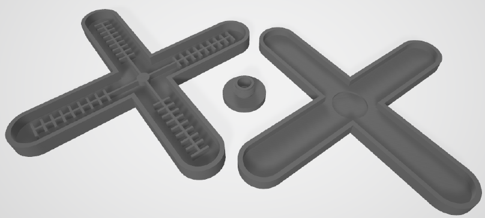
CMU | Spring 2022 | Soft robotics
Soft Robotic Gripper with Sensor
Fabricated a pneumatic gripper and validated flex-sensor feedback against measured bending angles.
Arduino
Flex sensors
Pneumatics
Validation
Focus: Real-time bending feedback for soft robotic actuation.
Implementing traditional sensors on soft robots presents significant challenges. In this project, our team introduce a novel approach by developing a soft robot that seamlessly integrates both sensing and actuation capabilities. Our project involved designing a 3D printed mold, fabricating a pneumatic actuated gripper, and implementing flex sensors to enable real-time measurement of bending angle.
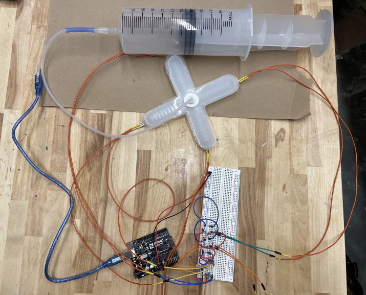
Overall installation view
To validate the accuracy and feasibility of our approach, we compared the data collected from Arduino, which reads the flex sensor measurements, with measurements made in AutoCAD. The results demonstrate that the implementation of flex sensors on soft grippers achieves a high degree of feasibility and accuracy.
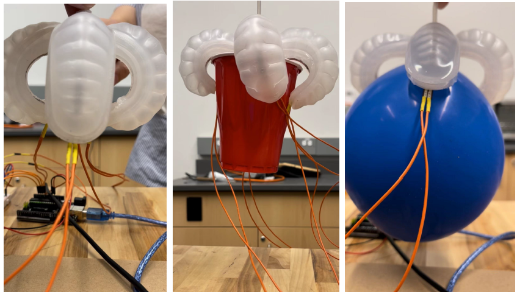
Pneumatic actuated robot gripping air (Left), cylindrical cup
(Middle) , and spherical balloon (Right) while collecting data with flex
sensors.
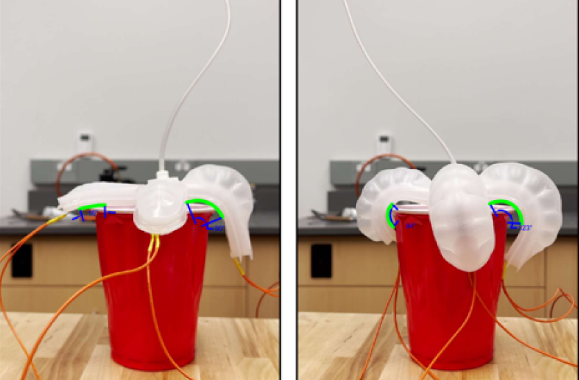
Measuring bending angles of fingers 2,4 at 19 and 33 seconds using AutoCAD
By incorporating flex sensors, we enable the acquisition of real-time feedback data, which opens up possibilities for closed-loop control over soft robotic grippers. This advancement has significant potential for enhancing the manipulation capabilities of soft robots in various applications.
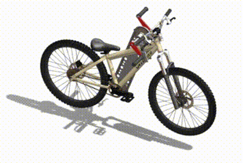
Rose-Hulman | 2020-2021 | Mechanisms
Dual Crank Bike Design
Developed a hand-driven clutch concept and supporting mechanical components for prone cycling.
SolidWorks
ANSYS
FEA
Mechanisms
Focus: Clutch, steering lock, protective case, and fatigue risk.
The project was initiated by a cycling enthusiast with the vision to develop a dual crank bicycle that could be operated in a prone position. The primary aim was to introduce this new riding style into the market at a low cost and as an accessory to standard bikes.
The team developed a unique hand-driven clutch for standard mountain bikes, designed in SOLIDWORKS. The clutch was created to transfer input power effectively and operate as an engage/disengage mechanism. A steering lock was also designed to allow riders to lock the steering handle when using the hand crank, maintaining a degree of freedom for balance. Furthermore, a protective case was added to shield riders from potential injury caused by the additional chain connecting the clutch to the sprocket.
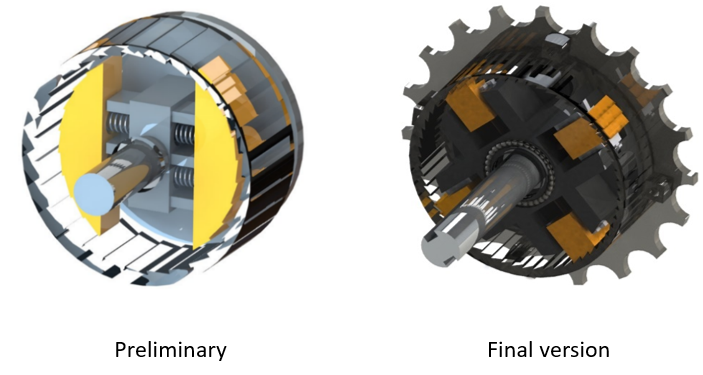
Clutch Design
ANSYS was utilized for Finite Element Analysis (FEA), focusing on stress and fatigue failure of the components. Particular attention was paid to the clutch's block tooth and wall sections, as these were identified as potential points of failure. The selection of springs was based on desired spring constants and fatigue requirements.
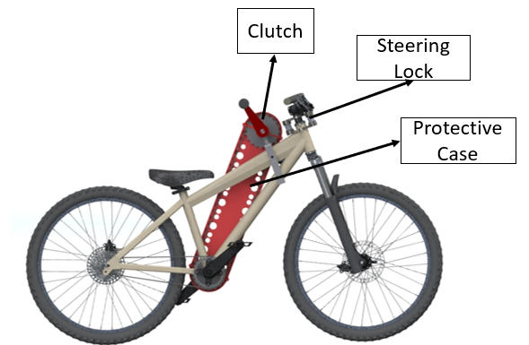
Dual Crank Bike
While the project was halted due to pandemic-related restrictions, the groundwork laid by this team sets the foundation for future teams to improve the manufacturability and marketability of the design. The design's potential for increased power efficiency and solving balance issues will be addressed in future development stages.
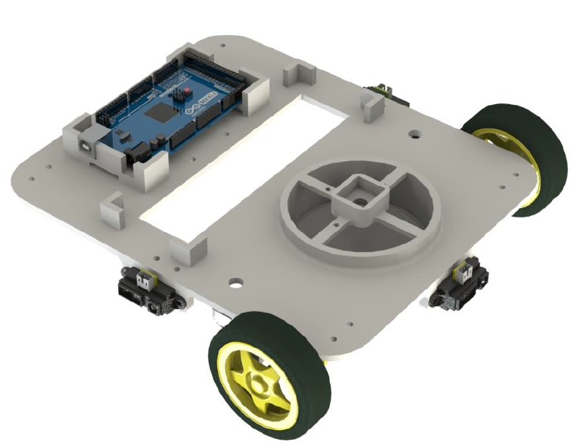
Rose-Hulman | 2020-2021 | Embedded robotics
Cleaning Robot Design
Built an autonomous mobile robot prototype with obstacle sensing and basic cleaning behavior.
Arduino
IR sensor
Ultrasonic sensor
3D printing
Focus: Obstacle avoidance and autonomous wandering behavior.
The primary goal of this project was to design a robotic cleaner capable of navigating its environment autonomously. The robot needed to avoid obstacles and perform cleaning operations.
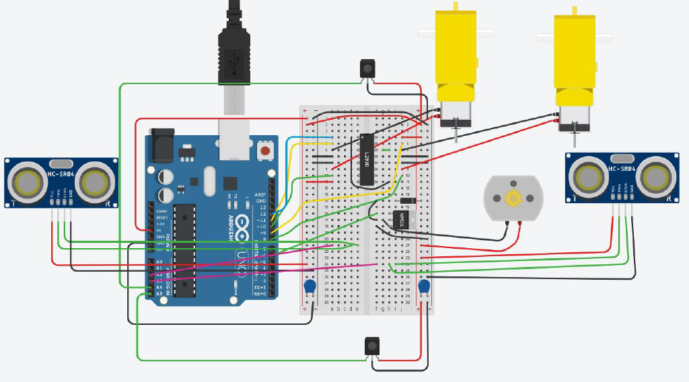
Tinkercad circuits
We designed the robot structure inspired by 'Cog', a mobile robot we previously worked on. The robot was programmed to wander randomly, capable of moving forward, backward, and turning to either side. Inputs to the robot were taken from Sharp GP2Y0A21YK0F IR Distance Sensor and HC SR04 Ultrasonic Distance Sensor. Outputs included controls for the Gear DC Motor and Mega 2560 Starter Kit Fan Motor, and debugging LEDs. As a rudimentary implementation of the cleaning function, we used the Fan Motor as a brush substitute.
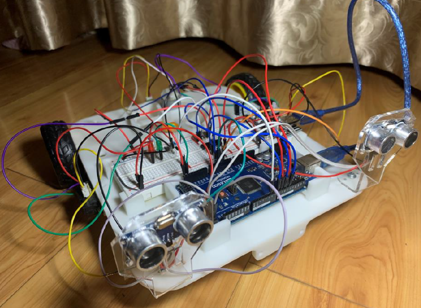
Final Robot with 3D-printed Base
The robot was successful in wandering randomly and its sensors effectively detected distances. The obstacle avoidance function was operational, though not as planned, primarily due to issues with updating the sensor using Timer1 interrupt. Furthermore, due to limitations with the Gear DC Motor and the delay() function used for controls, Timer1 was not fully operational, suggesting a need for a servo-based improvement.
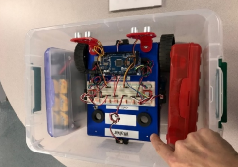
Rose-Hulman | 2019-2020 | Navigation
Wireless Communication, GUI, and Navigation
Implemented MATLAB GUI, wireless data flow, path planning, localization, and mapping for a mobile robot.
MATLAB
GUI
Path planning
Mapping
Focus: Wireless communication, localization, and robot navigation.
The aim of this project was to develop multiple navigation competencies for a mobile robot named 'Cog'. Leveraging wireless communication and graphical user interfaces, we implemented path planning, path following, localization, and mapping operations using MATLAB and Cog.
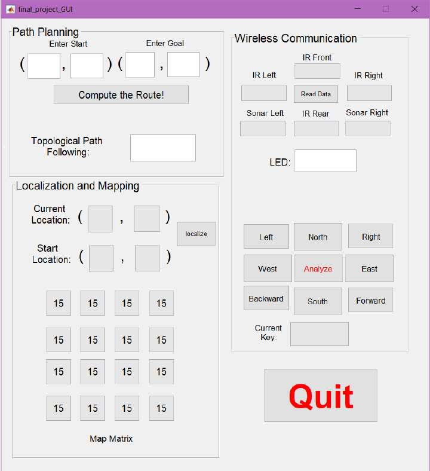
Final GUI I built in MATLAB
The team successfully implemented wireless communication between Cog and MATLAB, designing a user interface to visualize transmitted data. We employed both topological and metric navigation methodologies to maneuver Cog from a starting point to a goal position. Localization tasks were performed using infrared (IR) feedback to identify Cog's location on a predefined map. Lastly, a topological map was created by guiding Cog throughout the environment and collecting IR feedback data.
The project demonstrated that Cog could competently execute wireless communication, GUI operations, path planning and following, and localization and mapping. We evaluated and confirmed the effective application of our programming logics and solutions.
This challenging project provided a rewarding experience for me, particularly witnessing the successful implementation of desired behaviors in Cog. Through this, I gained not only programming skills, but also problem-solving capabilities, and a deeper understanding of robotic theories.
Contact
Let's talk engineering.
Open to conversations about mechanical design, robotics, controls, prototyping, and related opportunities.